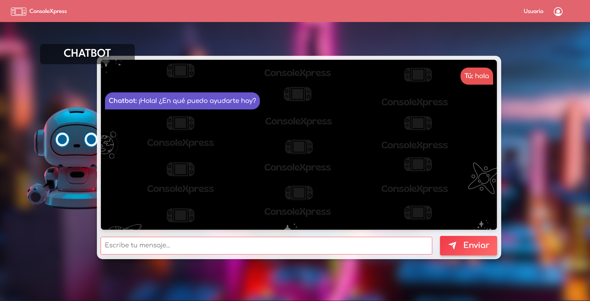

ConsoleXpress
En el proyecto ConsoleXpress, una plataforma de compra y venta de consolas de videojuegos, desempeñé el rol enfocado en base de datos. Me encargué del diseño y estructuración de la base de datos del sistema, asegurando una correcta organización de la información relacionada con usuarios, productos y transacciones. Implementé relaciones entre tablas y optimicé consultas para mejorar el rendimiento del sistema.
Base de datos
Github
Tecnologías utilizadas
Competencias técnicas
